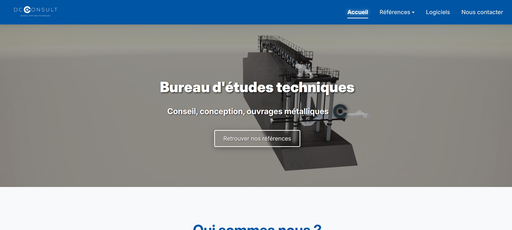
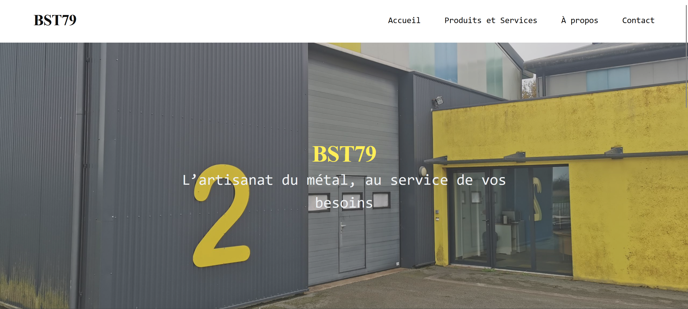
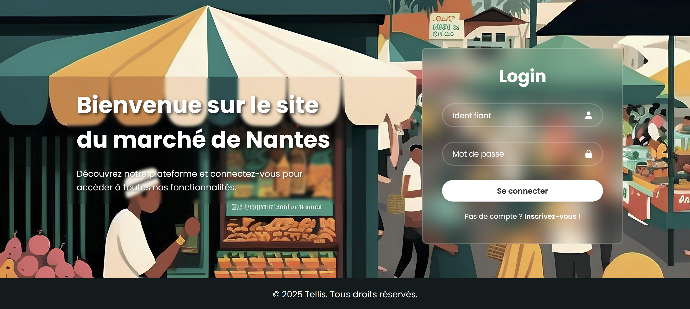
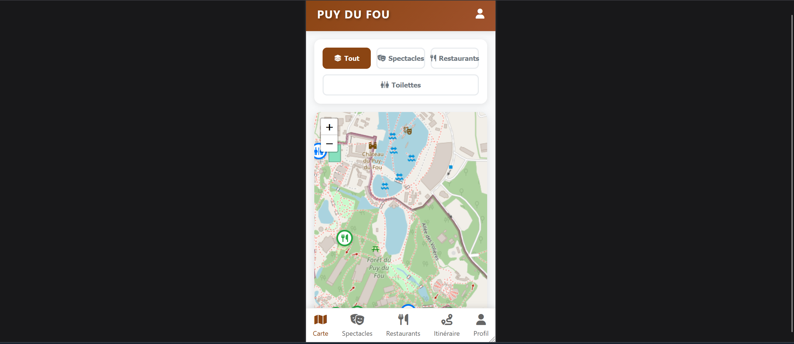

Découvrez une sélection de mes projets personnels et académiques en développement web et applications.
Web • Applications • Bases de données
Filtrez mes projets selon vos centres d'intérêt
Cliquez sur un projet pour en savoir plus

Création d'un site vitrine pour une PME spécialisée en charpente métallique.

Création en équipe du site vitrine BST79 via WordPress.

Site de gestion de placements sur un marché avec système de réservation.

Application web d'itinéraires optimisés pour le Puy du Fou avec espace gestionnaire.
Refonte complète en application web dynamique avec Symfony, BDD et espace client/admin sécurisé.
Création d'un site vitrine sur WordPress durant le stage chez Reulys.
Création d'un site vitrine sur WordPress durant le stage chez Reulys.
Création d'un site vitrine sur WordPress durant le stage chez Reulys.